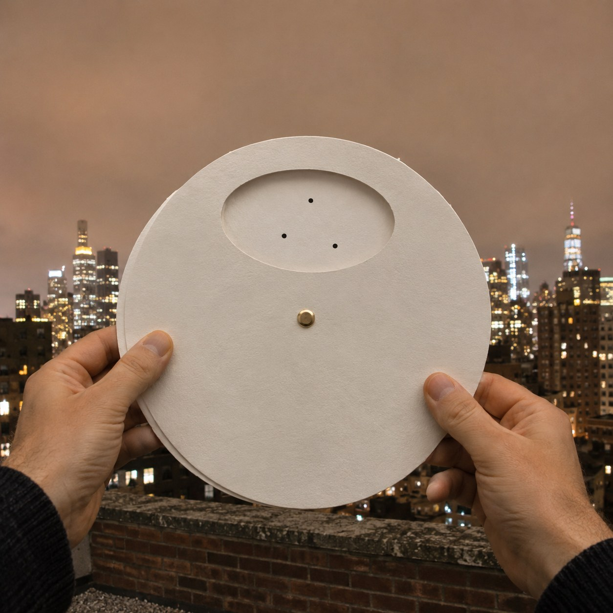
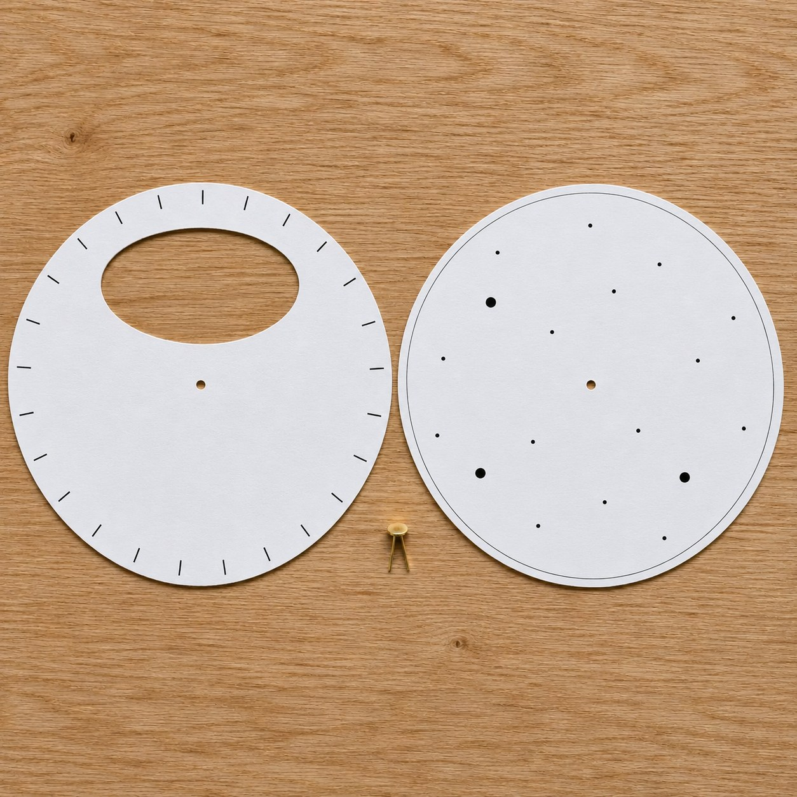

Clear Tonight


A planisphere is a star map you can turn. Two card discs share one pin. The lower one is printed with the whole sky; the upper one has an oval window cut in it. Set the date against the hour, and the window shows the stars standing over you now.
This one was made for the middle of a city. It carries only the stars that can be seen from there on a clear night. There are eighteen. Turn the wheel to any night of the year, any hour, and the window opens on a pale oval with three dots in it, or two, or none.
It is the most accurate star map I own. Everything on it is really there. It leaves out only what the street lights have already left out.
On a dark hillside a person can see a few thousand stars at once, and a faint band of light across the middle of them. Most languages have a name for that band. In Finnish it is the path of the birds. In Swedish it is the winter street. In Chinese it is the silver river. A world atlas of night sky brightness, published in 2016, found that it is now hidden from more than a third of the people alive. The names are still in daily use. For many of the people saying them, they point at nothing they have seen. The river has dried, and the word for it still runs.
Katie Paterson once etched a map of every known dead star into a sheet of black metal: a chart of what is no longer there. This chart is the other way round. Every star left off it is still burning. Its light has travelled for years, some of it for centuries, to reach this street. It arrives every night, and in the last moment of the trip it is lost in a glow a few hundred metres up, which is ours.
The forecast for tonight says clear. The wheel agrees.